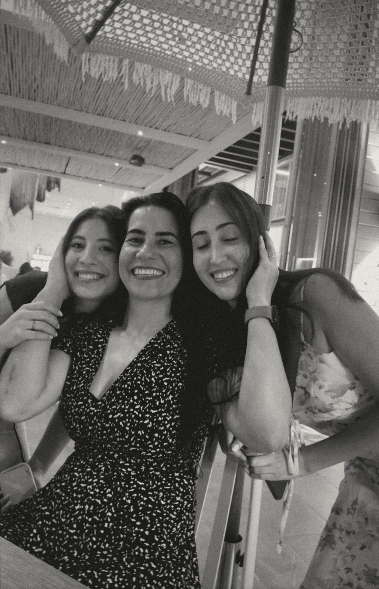
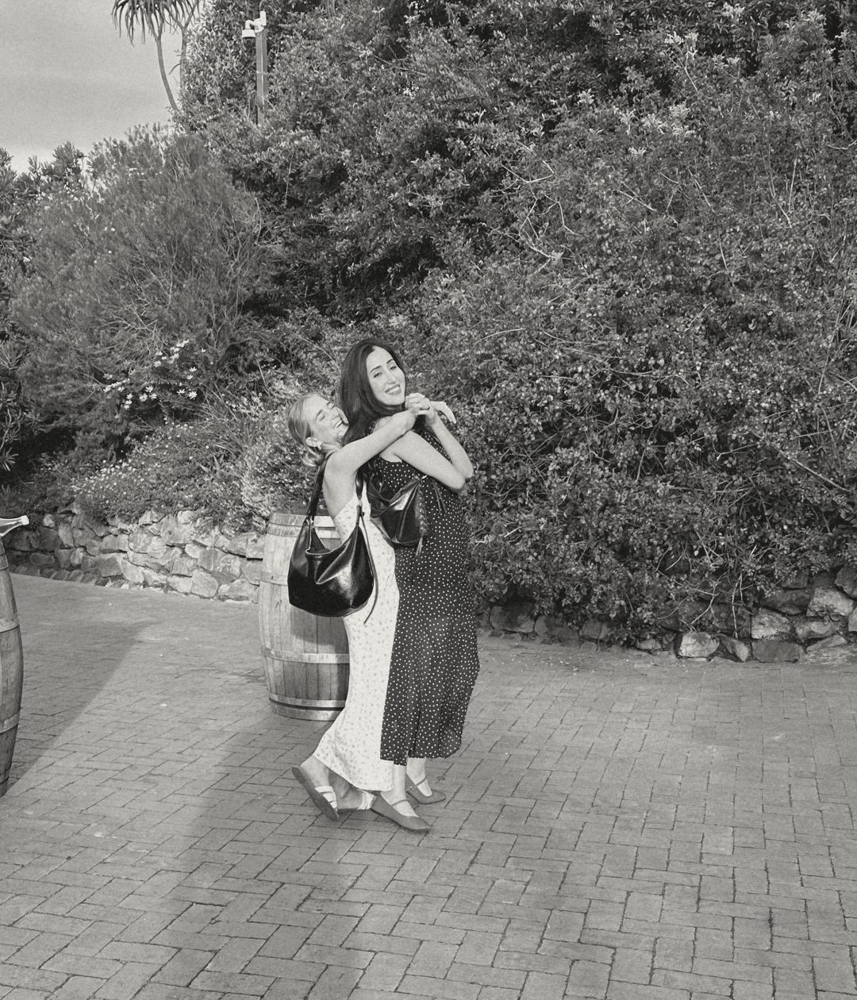
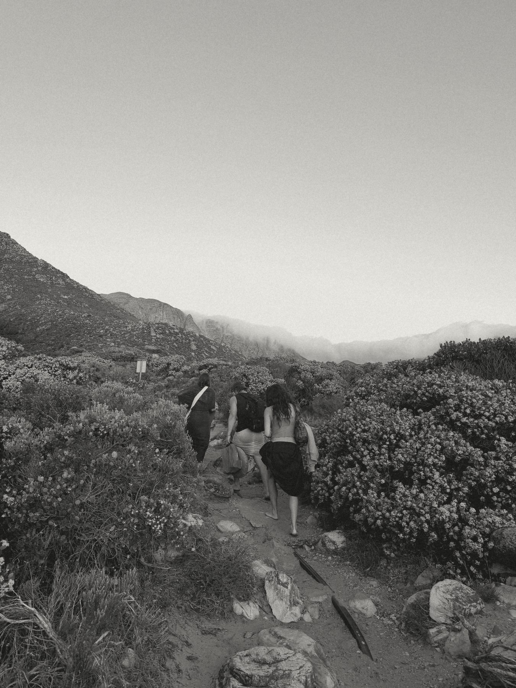
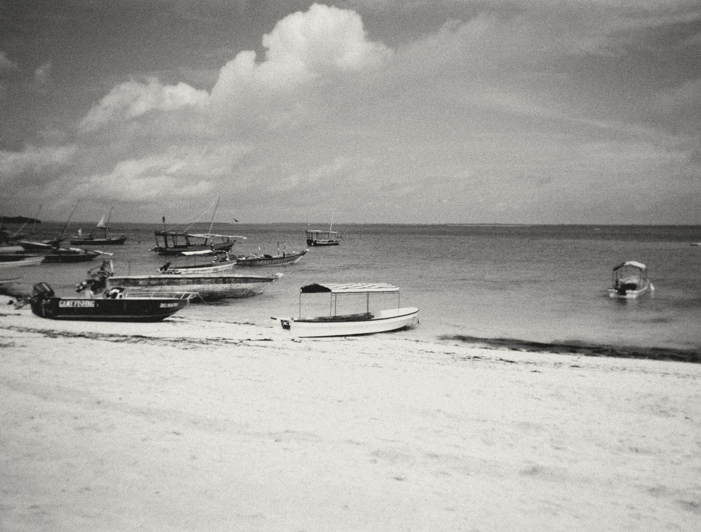
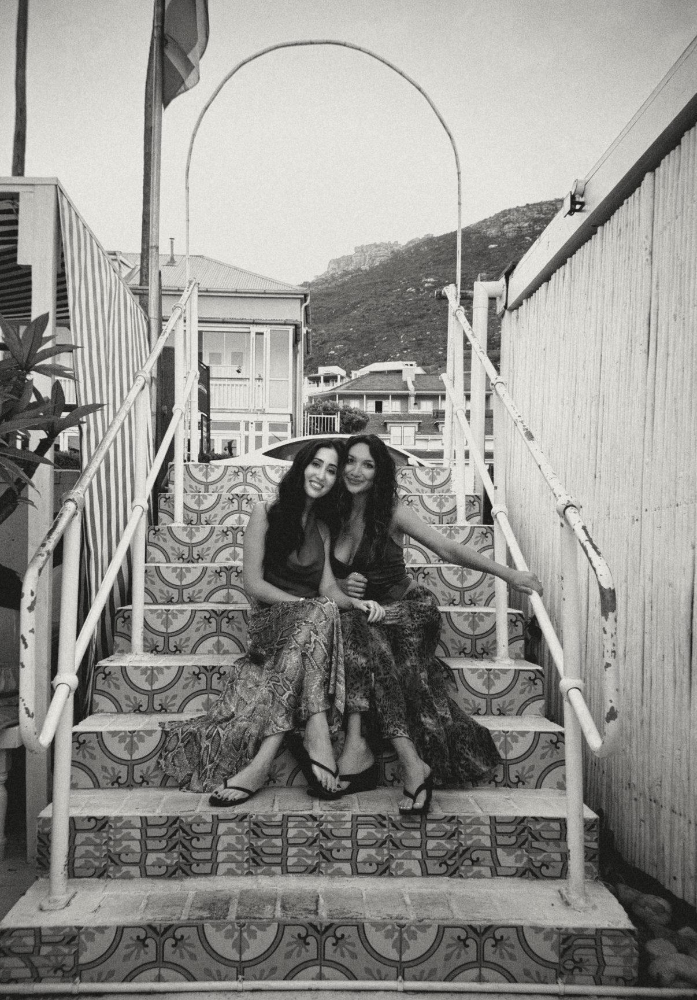
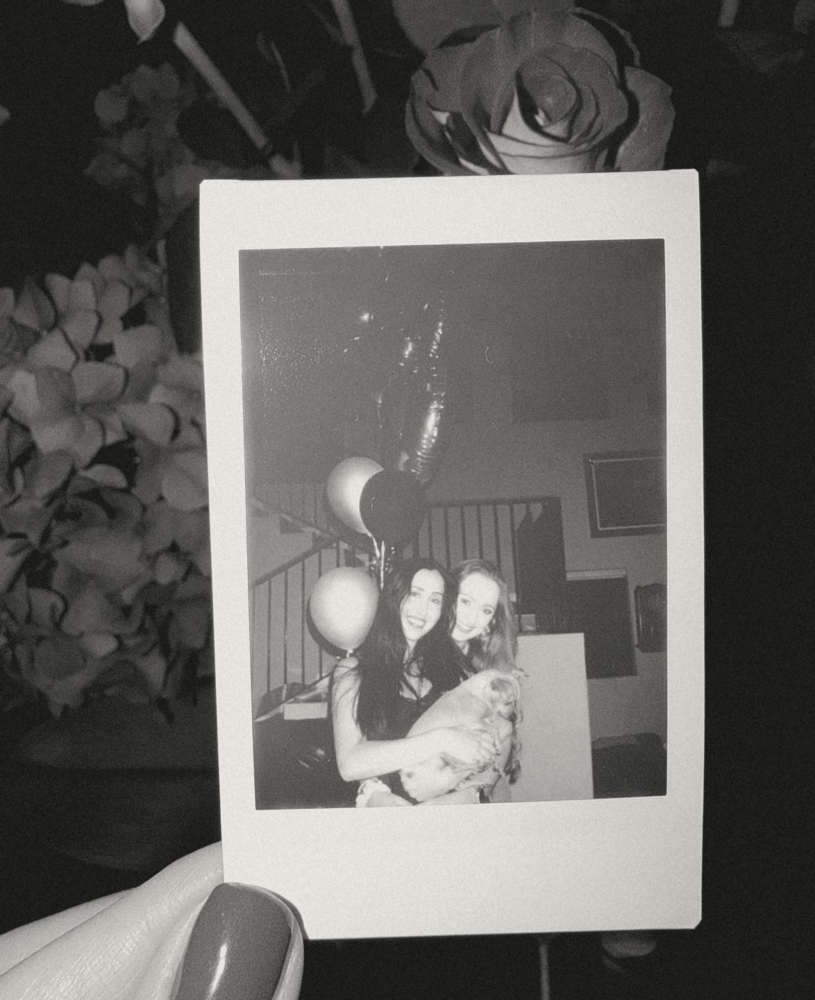

Things I love
- 1Piano
- 2Running
- 3Strength training
- 4Yoga
- 5Crafts
- 6
 Photography
Photography - 7Building random things with AI
- 8
 Creating AI portraits of my friends
Creating AI portraits of my friends - 9Practicing mindfulness
- 10


My family, friends, and dogs - 11Learning new things
- 12Spending time outdoors
- 13

Hiking - 14

Floating in calm bodies of water - 15

Architecture & interior design - 16Fashion
- 17Rock climbing
- 18Pranks
- 19Crossword puzzles
- 20Board games (especially trivia ones)
- 21Baking
- 22History
- 23Water parks
- 24Being described
- 25Handwritten cards/notes
- 26Interpretive dance (watching, not doing)
- 27Tuvan throat singing
- 28Karaoke
- 29Blind karaoke
- 30

Anything vintage